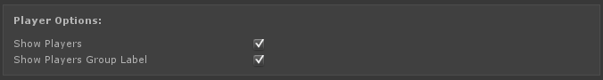
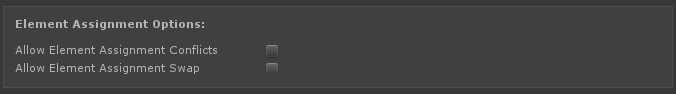

Control Mapper
- Overview
- Setup
- Saving and Loading User Data
- Conflict Checking
- Theming
- Lanugage
- Misc Notes
- FAQ
- Inspector Options
Overview
Control Mapper is a customizable, responsive control mapping system included with Rewired that you can use in your games. This system provides complete controller remapping including keyboard, mouse, and joystick support, axis calibration, joystick and mouse sensitivity, single or multiple players, controller maps, and much more. Control Mapper can be fully controlled with keyboard, mouse, joystick, and/or touch controls. Control Mapper uses Unity's new GUI system and therefore requires Unity 4.6+.
Control Mapper has many options which you can customize to fit your game's needs:
- Optional display of Players for multiplayer games.
- Optional multiple controllers per-player.
- Optional Input Behavior customization.
- Optional Map Category display.
- Customizable list of Actions to show per category.
- Optional display of Action category names.
- Optional Keyboard, Mouse, and Controller support.
- Choose the number of alternate fields per controller type.
- Customizable theme settings for changing colors and button styles.
- Customizable language settings for changing button and window labels and messages.
- Menu control by your choice of Rewired Player(s).
- Customizable Actions for opening, closing, and canceling.
Example screen showing multiple players, multiple controllers per-player, sensitivity settings, multiple map categories, with keyboard, mouse, and controller support.
Example screen showing a view of a simple 1-player game with only one map category, one controller, keyboard support with 1 mapping per keyboard key, and using a different theme.
The information that follows assumes you are familiar with working with input in Rewired. If you are not, read through the documentation first. Step by step basics of how to use Rewired will not be covered here.
Control Mapper files including examples can be found in the Rewired/Extras/ControlMapper folder.
Setup
The Control Mapper is a prefab which you can drag into your scene and use. This prefab includes the Canvas which will be used to render the UI elements.
To add Control Mapper to your scene, you can add it from either of the following menus:
- Window -> Rewired -> Create -> UI -> Control Mapper
- Game Object -> Create Other -> Rewired -> UI -> Control Mapper
Or you can add it as a live prefab by dragging it in from the project view. (Note: If using a live prefab, do not commit any changes to the prefab source or they will be overwritten the next time you update Rewired. You can, however, make a new prefab of your own out if it and modify that.)
Once the Control Mapper is in your scene, you can customize many options by changing settings in the inspector. The first thing you must do is to link your Rewired Input Manager object to the Control Mapper object in the Rewired Input Manager field in the inspector. Once you have done this, you can proceed to customize settings.
See Inspector Options for more details about the Control Mapper inspector settings.
RewiredStandaloneInputModule
Control of the UI is handled by the RewiredStandaloneInputModule. This component must be added to the EventSystem in the scene and the default StandaloneInputModule must be disabled or removed.
You can either create a normal Unity Event System and replace the Standalone Input Module with the Rewired Standalone Input Module component or you can create a Rewired Event System from either of the menu items:
- GameObject -> Create Other -> Rewired -> UI -> Rewired Event System
- Window -> Rewired -> Create -> UI -> Rewired Event System
 Four Actions must be set up in the Rewired Input Manager and the RewiredStandaloneInputModule in order to control the UI. These four Actions must have names that match exactly in both the Rewired Input Manager and the RewiredStandaloneInputModule.
Four Actions must be set up in the Rewired Input Manager and the RewiredStandaloneInputModule in order to control the UI. These four Actions must have names that match exactly in both the Rewired Input Manager and the RewiredStandaloneInputModule.
- Horizontal Axis - The Action that will control Left/Right movement in the UI.
- Vertical Axis - The Action that will control Up/Down movement in the UI.
- Submit - The Action that submits a button.
- Cancel - The Action that cancels.
The actual names you use are up to you. Of course these Actions must also be assigned to one or more keyboard or joystick maps and assigned to a Player to be functional.
If you want to use mouse pointers exclusively to interact with the UI, you can set all these Actions to blank strings.
Alternately, you can set Actions by id by enabling "Set Actions By Id."
NOTE: It is HIGHLY recommended that you create unique menu-only Actions for these UI controls in a separate controller map category from your game Actions. If you use your in-game actions such as "Move Horizonal" or "Jump" for these UI controls, you run the risk of allowing the user to render the UI unusable because they removed an assignment for one of these game Actions which was also controlling the UI.
The settings in the RewiredStandaloneInputModule will determine which Players can control the UI. If you check "Use All Rewired Game Players", all Players besides the System Player that have a map configured with these UI Actions will be able to control the UI. If you check "Use Rewired System Player", the same will be true for the System Player. If instead you only want specific Players to control the UI, you can set these Player Ids individually.
If the UI control speed with a Joystick seems too slow or fast, adjust the "Input Actions Per Second" setting.
Rewired Input Manager settings
This image shows the 4 actions that have been set up for controlling the UI.

Recommended UI control scheme
Rewired and the Control Mapper system are very flexible. As such, every possible situation cannot be "automagically" taken care of for you. You need to spend some time to plan and understand your control scheme.
It is possible to create a situation where the user is able to break his ability to control the UI by unassigning necessary Actions such as the Submit button. With a mouse available on the system, this would not be a problem as it is not dependent on Actions, but on platforms without mouse or touch input to fall back on in the case of user error, you need to consider these situations. It may not be advisable to allow users to remap everything.
Keyboard:
It is generally a good idea to have fixed keyboard UI controls that the user cannot remap, such as the arrow keys for navigation and the enter keys for submit. These can either be owned by the System Player or any/all of your Players. You can set up a separate Map Category for these protected UI controls and protect them from being replaced during reassignment excluding this Map Category from conflict checking in all your other Map Categories in the Rewired Input Manager. Also, do not add this Map Category to the list of assignable maps in the Control Mapper inspector options.
Mouse:
Do not assign UI Submit or Cancel Actions to Mouse Left Button or Mouse Right Button or you will receive double-clicks evey time the mouse button is pressed over a button. The mouse button click on a UI element is based on mouse cursor screen position and does not use the Action system. If you assign these UI Actions to the mouse buttons, if a button/field is currently selected and you click anywhere on the screen, the selected buton/field will receive the UISubmit or UICancel Action regardless of where you click on the screen.
Joysticks:
Recognized joysticks should have a map created for UI control if you wish to support joystick UI navigation. If you want the user to be able to remap these menu controls, it is recommended that you create yet another separate Map Category for these user-configurable joystick controls. By making a separate Map Category for these controls, you are able to allow the user to remap these joystick controls while still keeping the keyboard controls protected. Conflict checking settings for the Map Category should exclude all game controls and vice versa if you want the user to be able to map the same elements in different categories without being warned about conflicts.
Unknown Controllers:
It is recommended that you create a map for the Unknown Controller in the UI control category. This way, if a user attaches a controller Rewired does not recognize, they should still be able to control the UI reasonably well.
There is no way to know what axes or buttons will actually be available on these controllers, but you can make some basic assumptions that should allow most controllers to control the UI.
- Axis 0: Map to your "UIHorizontal" Action. (Axis 0 is almost always the horizontal axis on the first joystick)
- Axis 1: Map to your "UIVertical" Action and Invert this axis. (Axis 1 is almost always the vertical axis on the first joystick and is always inverted.)
- Button 0: Map to your "UISubmit" Action.
- Button 1: Map to your "UICancel" Action.

Of course, the above are only recommendations. You can set up your control scheme however you decide.
Saving and Loading User Data
Saving and loading of user data is handled by the UserDataStore component on the Rewired Input Manager. By default, this component does not exist on the Rewired Input Manager. Without this component, data will never be saved or loaded and will not persist between game sessions.
If you add a UserDataStore derived component to the Rewired Input Manager, it will be used to save and load data. Rewired includes a UserDataStore_PlayerPrefs component which will use PlayerPrefs to save the controller data. Simply add this component to your Rewired Input Manager and data will be loaded and saved as needed.
Control Mapper will save data when any of the following occur:
- The Control Mapper window is closed by the user.
- A joystick is unplugged.
Control Mapper will load saved data when any of the following occur:
- At runtime start if "Load Data On Start" is checked in the UserDataStore_PlayerPrefs component inspector.
- A joystick is plugged in.
If you are using multiple different Rewired Input Managers in different scenes, they all must have a UserDataStore_PlayerPrefs component and the "Player Prefs Key Prefix" must match in order for the same save data to be loaded by each Rewired Input Manager.
If you don't want to use PlayerPrefs, you can create your own data storage system using UserDataStore. See User Data Store for more information.
IMPORTANT: Saved XML data is not updated when you make changes to the Rewired Input Manager
Control Mapper does not manage changes between the Rewired Input Manager and data that is already saved to XML. If you make changes to the Rewired Input Manager settings such as adding new controls to a Joystick Map, these new changes will not be preserved when loading saved XML data. The only automated solutions would be to either clear the save data by clearing Player Prefs so that the Rewired Input Manager defaults are used instead or load the default maps in the Player for the any controllers that changed and save those to XML overwriting the existing saved mappings.
Management of saved user data is up to the developer. If you have special needs beyond the basic use cases, you should extend and replace the UserDataStore_PlayerPrefs component with a new UserDataStore component that meets your specific needs.
***IMPORTANT***:
When doing testing, if you open and close the Control Mapper screen or unplug a joystick while the Control Mapper screen is open, you are causing it to save XML data in the registry even if you didn't change any mappings or settings. The next time you start the game (provided the Rewired Input Manager with the UserDataStore_PlayerPrefs component is present in the scene), it will load that saved XML data from the registry, NOT the default settings stored in the Rewired Input Manager. While doing testing, you will most likely want to clear this saved data so the default settings in the Rewired Input Manager are loaded instead of the saved data. This can be done by clearing Player Prefs by opening the "Debug Options" foldout on the Rewired Input Manager inspector.
If you are confused by your input configuration not matching what you defined in the Rewired Input Manager, or you are seeing different behaviors in the Unity Editor versus a game build, you most likely are loading XML data that you are unaware that you saved. Clear Player Prefs and everything will reset to the defaults.
Conflict Checking
Rewired's conflict checking system tries to prevent the user from cross-assigning his controls. For example, if the user tries to assign the key A to "Fire" after it has already been assigned to "Jump", a warning will be displayed asking the user whether they would like to replace the assignment or (optionally) add the new conflicting assignment anyway. (See Inspector Options for the option to allow conflicting assignments.)
The Rewired Input Manager has many options for controlling conflict checking. These are handled on a Map Category basis. You are able to set which Map Categories perform conflict checking against other Map Categories. This conflict checking is configurable independently each way, so if you want one Map Category to conflict check against another but not vice versa, this is possible. Additionally, this allows you to have categories such as "Common", "Infantry Mode", "Tank Mode", "Airplane Mode" and have all these maps configurable by the user without having conflict checking between mutually-exclusive Map Categories such as "Tank Mode" and "Infantry Mode" while all still conflict checking against "Common" and vice versa. See Rewired Editor - Map Categories for more information.
Protected controls
You may want to have certain controls protected from re-assignment. One example of this might be the ESC key if you use that for some important system control and you don't want the user removing this assignment by trying to assign ESC to another Action. In Rewired, protection of controls is handled on the Map Category level. To protect a set of System controls from ever being re-assigned, uncheck the "User Assignable" checkbox in the Map Category that contains the Action in the Rewired Input Manager.
- Map Category -> User Assignable
Theming
Control Mapper comes with a basic theming system to allow you to change colors, fonts, and sprites by simply editing a theme file.
The process:
- Make a copy of the DefaultTheme file in the ControlMapper/Themes directory.
- Move this copy to somewhere inside your project (outside the Rewired folder).
- On the Control Mapper game object in your scene, assign the new theme file you created to the Theme field in the inspector.
Editing the theme:
Edit the theme file in the inspector. There is no user-friendly inspector for this theming process, but the names of the fields should be self-explanatory. Make your changes and they will show up when you launch the game. (Theme setting changes can not be viewed in real-time in the editor.)
These theme options just mirror the various options available on Unity UI components such as Image, Button, Slider, etc. If you don't understand what these options mean, see the Unity UI documentation on these components.
Language
Control Mapper has a basic language system which you can use to customize button and section labels, window titles, and more.
The process:
- Make a copy of the DefaultEnglish file in the ControlMapper/Languages directory.
- Move this copy to somewhere inside your project (outside the Rewired folder).
- On the Control Mapper game object in your scene, assign the new language file you created to the Language field in the inspector.
Editing the language:
Edit the language file in the inspector. There is no user-friendly inspector for this language editing process, but the names of the fields should be self-explanatory. Make your changes and they will show up when you launch the game. (Language setting changes can not be viewed in real-time in the editor.)
Misc Notes
Other UI Selectables outside or behind Control Mapper
- UI auto navigation will find other UI elements outside Control Mapper and try to navigate to them when a direction is pressed. If you have other UI elements behind Control Mapper, you must disable interactability on them. The easiest way to do that is with a Canvas Group setting CanvasGroup.interactable to false.
- If you have multiple Canvases in your scene and you want auto navigation to work between elements on the different Canvases, all Canvases must have the same Render Mode.
Opening and closing the screen
The easiest way to control the screen is by assigning Actions in the Screen Control Actions section of the inspector.
Another way is by using a Unity UI button and assigning ControlMapper.Open() to the OnClick event.
You can also control the screen through scripting:
- Opening the screen: ControlMapper.Open();
- Closing the screen: ControlMapper.Close();
Control Mapper also has events for when the screen is opened and closed should you need that information.
Changing settings through scripting
Certain Control Mapper options can be changed through scripting, but not in real-time while the screen is open. This can be useful should you need to make changes based on some criteria such as platform-specific settings. For example, before initializing the Control Mapper (before opening it), you could disable keyboard support. This may be useful if you're publishing your game on a platform that doesn't support keyboards, but you don't want to create a separate Control Mapper for this.
Screen scale
Scale of the Control Mapper by default is handled by the Canvas Scaler Fitter component on the Canvas below the main Control Mapper game object. The Canvas Scaler Fitter component controls the scale settings for the display based on the current aspect ratio of the screen. Breakpoints have been predefined to help keep the display usable at various screen aspect ratios.
Frequently Asked Questions
How do I center the Control Mapper window?
ControlMapper -> Canvas -> MainPageGroup
Set equal paddings on Left, Top, Right, and Bottom and the window will be centered.
Is it possible to visually edit the Control Mapper layout in real-time?
Not easily. Control Mapper has many dynamically-generated UI elements which are generated at runtime based on the options set in the inspector. It is not a static UI layout that can easily be edited in real-time. However, you can press Play in the editor and edit some settings to get a preview of how changes might look. In order to commit those settings though, you have to stop Play mode and remake the changes to the game objects while it is not in Play mode.
I want to customize more than what's available in the theme settings. How do I do that?
The theme was meant to provide basic customization of the styles on all elements because they're dynamically generated. Basic functional customization is done through the Control Mapper inspector. Anything beyond that is out of the scope of the tool and up to you to implement if you choose to and requires a very good knowledge of Unity UI.
There are certain areas which you cannot change the layout because they're generated by scripting such as the columns of input fields. Other things can be moved and reordered such as the various sections at the top. But be aware that some changes will cause problems. One thing everyone seems to want to do is to move the Done button to the bottom. I advise against this because the auto-scroll system put in place for the input field grid will make it so you have to scroll through every Action entry before it will jump down to the Done button.
Alignments, padding, spacing, etc. can be changed with the standard options in Unity's UI system for the various UI game objects in the hierarchy.
You have to know Unity UI very well and you can customize it pretty much however you want with the exception of the input grid. If you want to change that (beyond styling), you'll have to edit source code. And be aware that the layout, especially concerning the input grid scroll area, is prone to breaking depending on what you do.
The basic groupings that pre-exist in the scene can all be rearranged at will:
- WindowButtonGroup
- PlayersGroup
- ControllerGroup
- SettingAndMapCategoriesGroup
- InputGridGroup
You can press Play and change the order of these in the hierarchy and see them switch places in real-time. Committing changes requires you do it again outside Play mode though. The objects inside these groups are dynamically generated based on settings in the Control Mapper inspector. In addition, visibility of these groups may also be affected by Control Mapper inspector options. You could manually set backgrounds on these groups in by adding Image components to them.
Any dynamically generated elements are loaded from the prefabs: Rewired/Extras/ControlMapper/Prefabs/Parts
Some things you could customize by modifying the prefabs, while some options would be overridden by the theme when it loads.
The ControlMapper->Canvas: Canvas Scaler Fitter component governs responsive break points. It can be disabled if you don't need that functionality.
If you need to modify any source prefab components, it's best to work with copies of everything so you can still update Rewired and not lose your changes. If you copy all the prefabs, you will need to re-assign the copies as the sources for the dynamically generated objects in the ControlMapper inspector -> Advanced Settings -> Internal Data -> Prefabs section. If you want to customize the popup windows, they are also in the prefabs folder. Same rules apply. Copy them, then re-assign the copies as the prefab sources.
How can I disable/hide the Pre-Input Assignment Time screen? I don't really need it because my game doesn't use analog input. I tried setting the time to 0 but it still flashes for a moment.
There is no way to disable that without changing the source code.
Even if your game doesn't use analog input, your players may still use physical analog controls. Disabling this would be a bad idea because the purpose of it is to prevent any inadvertent assignments such as when releasing a stick and its action of auto-centering itself registers as a negative stick movement mapping that to your Action.
Inspector Options
Many configuration options are available through the inspector. Most options have tool-tip help.
Rewired Input Manager
You must link a Rewired Input Manager to this field in the inspector. All input data will be read from the Rewired Input Manager linked here.
Don't Destroy On Load
Set to True to prevent the Game Object from being destroyed when a new scene is loaded.
NOTE: Changing this value from True to False at runtime will have no effect because Object.DontDestroyOnLoad cannot be undone once set.
Screen Options
Various options for the control mapper screen.
| Open On Start | Open the control mapping screen immediately on start. Mainly used for testing. |
Player Options

Various options for Players.
| Show Players | Display a selectable list of Players. If your game only supports 1 player, you can disable this. |
| Show Players Group Label | Show the label for the Players button group? |
Controller Options
Various options for controllers.
| Show Controller | Display the Controller column for input mapping. |
| Max Controllers Per Player | The maximum number of controllers allowed to be assigned to a Player. If set to any value other than 1, a selectable list of currently-assigned controller will be displayed to the user. [0 = infinite] This field is only displayed if "Auto-Assign Joysticks" is disabled in the Rewired Input Manager -> Settings. In this case, the max number of controllers displayed per player is equal to the "Max Joysticks Per Player" setting in the Rewired Input Manager -> Settings. |
| Controller Input Field Count | The number of input fields to display for joysticks. If you want to support alternate mappings on the same device, set this to 2 or more. |
| Show Assigned Controllers | Show the Assigned Controllers group? If joystick auto-assignment is enabled in the Rewired Input Manager and the max joysticks per player is set to any value other than 1, the Assigned Controllers group will always be displayed. |
| Show Assigned Controllers Group Label | Show the label for the Assigned Controllers button group? |
| Show Controller Group Label | Show the label for the Controller button group? |
| Show Controller Name Label | Show the label for the current controller name? |
Keyboard Options
Various options for the Keyboard.
| Show Keyboard | Display the Keyboard column for input mapping. |
| Keyboard Input Field Count | The number of input fields to display for the keyboard. If you want to support alternate mappings on the same device, set this to 2 or more. |
Mouse Options
Various options for the Mouse.
| Show Mouse | Display the Mouse column for input mapping. |
| Mouse Input Field Count | The number of input fields to display for the mouse. If you want to support alternate mappings on the same device, set this to 2 or more. |
| Ignore Mouse X Axis Assignment | If checked, mouse X-axis movement will always be ignored during input assignment. Check this if you don't want the horizontal mouse axis to be user-assignable to any Actions. |
| Ignore Mouse Y Axis Assignment | If checked, mouse Y-axis movement will always be ignored during input assignment. Check this if you don't want the vertical mouse axis to be user-assignable to any Actions. |
Various options for the input field grid.
| Show Full Axis Input Fields | Display a full-axis input assignment field for every axis-type Action in the input field grid. Also displays an invert toggle for the user to invert the full-axis assignment direction. IMPORTANT: This field is required if you have made any full-axis assignments in the Rewired Input Manager or in saved XML user data. Disabling this field when you have full-axis assignments will result in the inability for the user to view, remove, or modify these full-axis assignments. In addition, these assignments may cause conflicts when trying to remap the same axes to Actions. |
| Show Split Axis Input Fields | Display a positive and negative input assignment field for every axis-type Action in the input field grid. IMPORTANT: These fields are required to assign buttons, keyboard keys, and hat or D-Pad directions to axis-type Actions. If you have made any split-axis assignments or button/key/D-pad assignments to axis-type Actions in the Rewired Input Manager or in saved XML user data, disabling these fields will result in the inability for the user to view, remove, or modify these assignments. In addition, these assignments may cause conflicts when trying to remap the same elements to Actions. |

Options for the Map Categories and Actions displayed to the user for input mapping.
You can define a list of Map Categories to be shown to the user for remapping. You can choose to show one or multiple Map Categories. If you define multiple Map Categories here, a new row of buttons will be shown that will allow the user to select a Map Category for which to create input assignments.
You must define a list of assignable Actions to displayed to the user for each Map Category. You can choose to show the user a list of all user-assignable Actions contained in an one or more Action Categories or a customized list of individual Actions.
| Show Action Category Labels | Display section labels for each Action Category in the input field grid. Only applies if Action Categories are used to display the Action list. |
| Show Map Categories Group Label | Show the label for the Map Categories button group? |
| Map Category | The Map Category that will be displayed to the user for mapping. |
| Action List Mode | Choose whether you want to list Actions to display for this Map Category by individual Action or by all the Actions in an Action Category. |
| Action Categories | List each Action Category you want to be displayed for this map category. This will list all user-assignable Actions in that category allowing the user to make assignments for each of these Actions. |
| Actions | List each Action you want to be displayed for this map category. This will allow the user to make assignments for each of these Actions. |
The controller map Layout that will be shown to the user. This remapping system only supports a single fixed Layout per controller type.
This Layout defined here is only a suggestion. If a ControllerMap with this Layout is found in the Player, it will be used. Otherwise, the first ControllerMap in the correct category found will be used regardless of the Layout id.
| Keyboard Map Default Layout | The Layout of the Keyboard Maps to be displayed. |
| Mouse Map Default Layout | The Layout of the Mouse Maps to be displayed. |
| Joystick Map Default Layout | The Layout of the Joystick Maps to be displayed. |
Input Behaviors
Settings for user-modifiable Input Behaviors. Only certain properties are supported.
You can define a list of Input Behaviors to be shown to the user for modification. If enabled, new controls will be displayed so the user can modify these settings. This is useful if you need to allow the user to set certain per-Action sensitivity levels such as Mouse Look Sensitivity.
| Show Input Behavior Settings | If checked, controls will be displayed which will allow the user to customize certain Input Behavior settings. |
| Show Settings Group Label | Show the label for the Settings button group? |
| Input Behavior | The Input Behavior that will be displayed to the user for modification. |
| Label Language Key | If set to a non-blank value, this key will be used to look up the name in Language to be displayed as the title for the Input Behavior control set. Otherwise, the name field of the InputBehavior will be used. |
| Joystick Axis Sensitivity Label Language Key | If set to a non-blank value, this name will be displayed above the individual slider control. Otherwise, no name will be displayed. |
| Show Joystick Axis Sensitivity | If checked, a slider will be displayed so the user can change this value. |
| Joystick Axis Sensitivity Icon | The icon to display next to the slider. Set to none for no icon. |
| Joystick Axis Sensitivity Min | Minimum value the user is allowed to set for this property. |
| Joystick Axis Sensitivity Max | Maximum value the user is allowed to set for this property. |
| Mouse XY Axis Sensitivity Label Language Key | If set to a non-blank value, this name will be displayed above the individual slider control. Otherwise, no name will be displayed. |
| Show Mouse XY Axis Sensitivity | If checked, a slider will be displayed so the user can change this value. |
| Mouse XY Axis Sensitivity Icon | The icon to display next to the slider. Set to none for no icon. |
| Mouse XY Axis Sensitivity Min | Minimum value the user is allowed to set for this property. |
| Mouse XY Axis Sensitivity Max | Maximum value the user is allowed to set for this property. |
Element Assignment Options

Various options for the element assignment.
| Allow Element Assignment Conflicts | If enabled, when an element assignment conflict is found, an option will be displayed that allows the user to make the conflicting assignment anyway. |
| Allow Element Assignment Swap | If enabled, when an element assignment conflict is found, an option will be displayed that allows the user to swap conflicting assignments. This only applies to the first conflicting assignment found. This option will not be displayed if Allow Element Assignment Conflicts is enabled. |
Timer Options
Various timer options.
| Pre Input Assignment Timeout | The time in seconds the user has to press an element on a controller while waiting for axes to be centered before assigning input. |
| Input Assignment Timeout | The time in seconds the user has to press an element on a controller when assigning input. If this time elapses with no user input on the target controller, the assignment will be canceled. |
| Controller Assignment Timeout | The time in seconds the user has to press an element on a controller when assigning a controller to a Player. If this time elapses with no user input a controller, the assignment will be canceled. |
| Axis Calibration Timeout | The time in seconds the user has to press an element on a controller during calibration. |
Input Grid Layout Options
Dimensions for various elements in the input grid.
| Action Label Width | The width in relative pixels of the Action label column. |
| Keyboard Col Max Width | The width in relative pixels of the Keyboard column. |
| Mouse Col Max Width | The width in relative pixels of the Mouse column. |
| Controller Col Max Width | The width in relative pixels of the Controller column. |
| Input Row Height | The height in relative pixels of the input grid button rows. |
| Input Column Spacing | The width in relative pixels of spacing between columns. |
| Input Row Category Spacing | The height in relative pixels of the space between Action Category sections. Only applicable if Show Action Category Labels is checked. |
| Invert Toggle Width | The width in relative pixels of the invert toggle buttons. |
Popup Window Options
Various options for popup windows.
| Default Window Width | |
| Default Window Height |
|
Actions that control the mapping screen.
| Screen Open Action | An Action that when activated will close the main screen as long as no popup windows are open. |
| Screen Close Action | An Action that when activated will open the main screen if it is closed. |
| Screen Toggle Action | An Action that when activated will alternately close or open the main screen as long as no popup windows are open. |
| Universal Cancel Action | An Action that when activated will cancel and close any open popup window. Use with care because the element assigned to this Action can never be mapped by the user (because it would just cancel his assignment). |
| Universal Cancel Closes Screen | If enabled, Universal Cancel will also close the main screen if pressed when no windows are open. |
Theme Options
UI theme options.
| Use Theme Settings | If enabled, UI elements will be themed based on the settings in Theme Settings. |
| Theme Settings | Must be assigned a ThemeSettings object. Used to theme UI elements. |
Language Options
Language options.
| Language | Must be assigned a LanguageData object. Used to retrieve language entries for UI elements. |
Events
On Screen Opened |
Event sent when the UI is opened. |
| On Screen Closed | Event sent when the UI is closed. |
| On Popup Window Opened | Event sent when a popup window is opened. |
| On Popup Window Closed | Event sent when a popup window is closed. |
| On Input Polling Started | Event sent when polling for input has started. |
| On Input Polling Ended | Event sent when polling for input has ended. |
Advanced Settings
These are internal settings like references to GameObject and Prefabs. You should not have to change these.